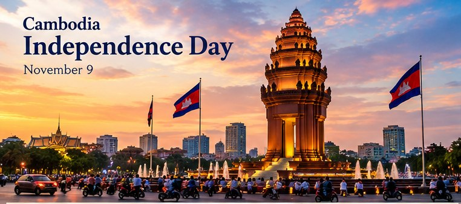

History & Culture
Cambodia Independence Day: November 9
A national day of sovereignty, remembrance, and pride

Cambodia celebrates Independence Day every year on November 9. The date commemorates the country’s independence from French protectorate rule in 1953, following a campaign led by King Norodom Sihanouk. It is a moment to reflect on sovereignty, national identity, and the people who helped shape modern Cambodia.
1. Why November 9 matters
The date marks the achievement of independence in 1953. It is distinct from the anniversary of the 1991 Paris Peace Agreements and from other national commemorations. Remembering the date helps connect present-day Cambodia with its modern history.
2. How the day is observed
Official ceremonies may include events at the Independence Monument in Phnom Penh, flag displays, speeches, wreath-laying, and community gatherings. The precise program can vary from year to year, so check current official announcements for event times and access details.
3. The Independence Monument
Phnom Penh’s Independence Monument is a major national symbol and a focal point for ceremonies. Its Khmer-inspired design makes it a recognizable landmark in the capital and a place where people gather to remember independence.
4. A respectful way to celebrate
Learn about the historical timeline, display the Cambodian flag respectfully, visit public monuments when open, or share family stories about Cambodian history. If attending a ceremony, follow local guidance and expect traffic or temporary road closures.
Planning note: Public holiday calendars and event arrangements can change. Confirm the current year’s dates and official notices before planning travel or relying on a closure.
Historical background: the road to independence
Cambodia’s Independence Day remembers the end of French protectorate rule and the achievement of independence in 1953. The campaign for independence was associated with King Norodom Sihanouk, whose political efforts helped bring the issue to the forefront. The date November 9 is now a yearly opportunity to learn about this turning point and how Cambodia’s modern state developed.
History is more than a single date. The path to independence took place in a wider period of change across Southeast Asia after the Second World War, when countries and communities debated sovereignty, political representation, and their future relationships with European colonial powers. Remembering the day helps readers place Cambodia’s experience in that regional context without reducing a complex history to one ceremony.
For a careful overview, the Extraordinary Chambers in the Courts of Cambodia (ECCC) historical timeline records that Cambodia achieved independence on November 9, 1953. Readers interested in deeper study can consult institutional histories and primary documents, and compare accounts rather than relying on social media summaries.
The Independence Monument and national remembrance
The Independence Monument in Phnom Penh is one of the best-known public symbols associated with the holiday. Its Khmer-inspired architecture makes it recognizable in the capital’s civic landscape. Official commemorations may include wreath-laying or other ceremonies at national monuments, public messages, and events organized by state institutions. The exact schedule can vary by year, so visitors should check current announcements rather than assume every activity will take place at the same time.
National symbols can serve as starting points for conversations about history. A monument does not tell every part of the story on its own, but it can encourage people to ask why it was built, what event it represents, and how public memory changes over generations. Families and teachers can use November 9 to explore photographs, maps, oral histories, and age-appropriate historical materials.
How people can mark the day respectfully
People observe national holidays in different ways. Some follow official ceremonies, read about Cambodian history, display the national flag, visit public landmarks when open, or spend time with relatives. Others use the day to share stories about a family’s experience of Cambodia across generations. There is no need to assume that every person celebrates in the same way.
If you plan to attend a public event, check the venue and timing in advance, allow extra travel time, and follow instructions from local organizers. Roads near major ceremonies may be restricted, and opening hours for museums, shops, and government services can differ from normal schedules. Keep children close in crowds and use official public-safety guidance.
Independence Day in the Cambodian calendar
November 9 is a fixed date on the Gregorian calendar. This makes it different from some Cambodian religious and cultural festivals whose dates are calculated using lunar-calendar traditions and therefore move from year to year on the Gregorian calendar. When planning a visit or checking workplace arrangements, use the official holiday calendar for the relevant year.
Independence Day also differs from other national observances. Coronation Day on October 29 remembers the formal coronation of King Norodom Sihamoni in 2004, while Peace Day on December 29 focuses on peace and national reconciliation. Each date has its own historical background and should be described accurately.
Sources and further reading
- Extraordinary Chambers in the Courts of Cambodia (ECCC): Historical Context — timeline noting Cambodia’s independence on November 9, 1953.
- Cambodia Ministry of Tourism: Festivals and public observances — background on Cambodian national and cultural celebrations.
This guide is intended as an accessible introduction, not a complete history of Cambodia’s independence movement. For academic work, consult historical scholarship and primary sources alongside public information pages.
Frequently asked questions
When is Cambodia Independence Day?
Every year on November 9.
When did Cambodia gain independence from France?
Cambodia’s independence is commemorated as taking effect on November 9, 1953.
Is it a public holiday?
Yes, it is listed among Cambodia’s national public holidays; confirm the official annual holiday calendar for workplace arrangements.
Explore more: Cambodian Public Holidays · Coronation Day · Khmer Calendar
← Back to the MyBirthSign Blogប្រវត្តិសាស្ត្រ និងវប្បធម៌
ទិវាបុណ្យឯករាជ្យជាតិកម្ពុជា
ថ្ងៃជាតិនៃអធិបតេយ្យភាព ការរំលឹក និងមោទនភាព
កម្ពុជាប្រារព្ធពិធីបុណ្យឯករាជ្យជាតិ រៀងរាល់ឆ្នាំនៅថ្ងៃទី 9 ខែវិច្ឆិកា។ កាលបរិច្ឆេទនេះរំលឹកដល់ការទទួលបានឯករាជ្យរបស់ប្រទេសពីរបបអាណាព្យាបាលបារាំង នៅឆ្នាំ 1953 ក្រោយយុទ្ធនាការទាមទារឯករាជ្យ ក្រោមការដឹកនាំរបស់ព្រះករុណា ព្រះបាទសម្តេចព្រះ នរោត្តម សីហនុ។ នេះជាពេលវេលាសម្រាប់ពិចារណាអំពីអធិបតេយ្យភាព អត្តសញ្ញាណជាតិ និងអ្នកទាំងឡាយដែលបានរួមចំណែកកសាងកម្ពុជាសម័យទំនើប។
1. ហេតុអ្វីថ្ងៃទី 9 ខែវិច្ឆិកា មានសារៈសំខាន់
កាលបរិច្ឆេទនេះសម្គាល់ការទទួលបានឯករាជ្យនៅឆ្នាំ 1953។ វាខុសពីខួបនៃកិច្ចព្រមព្រៀងសន្តិភាពទីក្រុងប៉ារីស ឆ្នាំ 1991 និងខុសពីទិវារំលឹកជាតិផ្សេងៗទៀត។ ការចងចាំកាលបរិច្ឆេទនេះ ជួយភ្ជាប់កម្ពុជាបច្ចុប្បន្ន ទៅនឹងប្រវត្តិសាស្ត្រសម័យទំនើបរបស់ខ្លួន។
2. របៀបប្រារព្ធទិវានេះ
ពិធីផ្លូវការអាចរួមមាន កម្មវិធីនៅវិមានឯករាជ្យក្នុងរាជធានីភ្នំពេញ ការដាក់តាំងទង់ជាតិ សុន្ទរកថា ការដាក់កម្រងផ្កា និងការជួបជុំរបស់សហគមន៍។ កម្មវិធីលម្អិតអាចប្រែប្រួលពីមួយឆ្នាំទៅមួយឆ្នាំ ដូច្នេះសូមពិនិត្យសេចក្តីជូនដំណឹងផ្លូវការថ្មីៗ ដើម្បីដឹងពីម៉ោងកម្មវិធី និងព័ត៌មានអំពីការចូលទៅកាន់ទីតាំង។
3. វិមានឯករាជ្យ
វិមានឯករាជ្យក្នុងរាជធានីភ្នំពេញ គឺជានិមិត្តរូបជាតិដ៏សំខាន់មួយ និងជាទីតាំងចំណុចកណ្តាលនៃពិធីនានា។ ការរចនាដែលបំផុសគំនិតពីស្ថាបត្យកម្មខ្មែរ ធ្វើឱ្យវិមាននេះក្លាយជាសំណង់សម្គាល់ដែលគេស្គាល់យ៉ាងងាយក្នុងរាជធានី និងជាកន្លែងដែលប្រជាជនជួបជុំគ្នា ដើម្បីរំលឹកដល់ឯករាជ្យ។
4. ការប្រារព្ធប្រកបដោយការគោរព
ស្វែងយល់អំពីលំដាប់ព្រឹត្តិការណ៍ប្រវត្តិសាស្ត្រ ដាក់តាំងទង់ជាតិកម្ពុជាដោយការគោរព ទៅទស្សនាវិមានសាធារណៈនៅពេលដែលបើកឱ្យចូល ឬចែករំលែករឿងរ៉ាវក្នុងគ្រួសារអំពីប្រវត្តិសាស្ត្រកម្ពុជា។ ប្រសិនបើអ្នកចូលរួមពិធី សូមធ្វើតាមការណែនាំនៅទីកន្លែង និងត្រៀមខ្លួនសម្រាប់ការកកស្ទះចរាចរណ៍ ឬការបិទផ្លូវជាបណ្តោះអាសន្ន។
ចំណាំសម្រាប់ការរៀបចំផែនការ៖ ប្រតិទិនថ្ងៃឈប់សម្រាកសាធារណៈ និងការរៀបចំកម្មវិធីនានា អាចមានការផ្លាស់ប្តូរ។ សូមផ្ទៀងផ្ទាត់កាលបរិច្ឆេទ និងសេចក្តីជូនដំណឹងផ្លូវការសម្រាប់ឆ្នាំបច្ចុប្បន្ន មុននឹងរៀបចំការធ្វើដំណើរ ឬរំពឹងថាកន្លែងណាមួយនឹងបិទ។
សាវតាប្រវត្តិសាស្ត្រ៖ ផ្លូវឆ្ពោះទៅរកឯករាជ្យ
ពិធីបុណ្យឯករាជ្យជាតិរបស់កម្ពុជា រំលឹកដល់ការបញ្ចប់របបអាណាព្យាបាលបារាំង និងការទទួលបានឯករាជ្យនៅឆ្នាំ 1953។ យុទ្ធនាការទាមទារឯករាជ្យ ផ្សារភ្ជាប់នឹងព្រះនាមព្រះករុណា ព្រះបាទសម្តេចព្រះ នរោត្តម សីហនុ ដែលព្រះរាជកិច្ចខិតខំប្រឹងប្រែងផ្នែកនយោបាយរបស់ព្រះអង្គ បានជួយលើកបញ្ហានេះឡើងជាបញ្ហាចម្បង។ សព្វថ្ងៃ ថ្ងៃទី 9 ខែវិច្ឆិកា គឺជាឱកាសប្រចាំឆ្នាំ ដើម្បីស្វែងយល់អំពីចំណុចរបត់ដ៏សំខាន់នេះ និងអំពីដំណើរវិវឌ្ឍនៃរដ្ឋកម្ពុជាសម័យទំនើប។
ប្រវត្តិសាស្ត្រមិនមែនត្រឹមតែកាលបរិច្ឆេទតែមួយនោះទេ។ ដំណើរឆ្ពោះទៅរកឯករាជ្យ បានកើតឡើងក្នុងសម័យកាលនៃការផ្លាស់ប្តូរដ៏ទូលំទូលាយ នៅទូទាំងតំបន់អាស៊ីអាគ្នេយ៍ ក្រោយសង្គ្រាមលោកលើកទីពីរ ដែលនៅពេលនោះ ប្រទេស និងសហគមន៍នានាបានពិភាក្សាដេញដោលគ្នាអំពីអធិបតេយ្យភាព ការតំណាងផ្នែកនយោបាយ និងទំនាក់ទំនងនាពេលអនាគតរបស់ខ្លួនជាមួយមហាអំណាចអាណានិគមអឺរ៉ុប។ ការរំលឹកទិវានេះ ជួយឱ្យអ្នកអានមើលឃើញបទពិសោធន៍របស់កម្ពុជា ក្នុងបរិបទតំបន់នោះ ដោយមិនបង្រួមប្រវត្តិសាស្ត្រដ៏ស្មុគស្មាញ ឱ្យនៅត្រឹមតែពិធីមួយ។
ប្រសិនបើចង់បានទិដ្ឋភាពទូទៅដែលហ្មត់ចត់ លំដាប់ព្រឹត្តិការណ៍ប្រវត្តិសាស្ត្ររបស់អង្គជំនុំជម្រះវិសាមញ្ញក្នុងតុលាការកម្ពុជា (ECCC) បានកត់ត្រាថា កម្ពុជាទទួលបានឯករាជ្យនៅថ្ងៃទី 09/11/1953។ អ្នកអានដែលចង់សិក្សាឱ្យស៊ីជម្រៅ អាចពិគ្រោះឯកសារប្រវត្តិសាស្ត្ររបស់ស្ថាប័ននានា និងឯកសារដើម ព្រមទាំងប្រៀបធៀបការរៀបរាប់ពីប្រភពផ្សេងៗ ជាជាងពឹងផ្អែកលើសេចក្តីសង្ខេបនៅលើបណ្តាញសង្គម។
វិមានឯករាជ្យ និងការរំលឹកជាតិ
វិមានឯករាជ្យក្នុងរាជធានីភ្នំពេញ គឺជានិមិត្តរូបសាធារណៈដ៏ល្បីបំផុតមួយ ដែលផ្សារភ្ជាប់នឹងពិធីបុណ្យនេះ។ ស្ថាបត្យកម្មដែលបំផុសគំនិតពីរចនាបថខ្មែរ ធ្វើឱ្យវិមាននេះងាយសម្គាល់ក្នុងទិដ្ឋភាពទីក្រុងនៃរាជធានី។ ការប្រារព្ធរំលឹកជាផ្លូវការ អាចរួមមានការដាក់កម្រងផ្កា ឬពិធីផ្សេងទៀតនៅតាមវិមានជាតិ សារជូនសាធារណជន និងកម្មវិធីដែលរៀបចំដោយស្ថាប័នរដ្ឋ។ កាលវិភាគជាក់លាក់អាចប្រែប្រួលតាមឆ្នាំ ដូច្នេះអ្នកទស្សនាគួរពិនិត្យសេចក្តីជូនដំណឹងថ្មីៗ ជាជាងសន្មតថាគ្រប់សកម្មភាពនឹងធ្វើឡើងនៅពេលវេលាដដែល។
និមិត្តរូបជាតិ អាចជាចំណុចចាប់ផ្តើមនៃការសន្ទនាអំពីប្រវត្តិសាស្ត្រ។ វិមានមួយមិនអាចប្រាប់រឿងរ៉ាវគ្រប់ផ្នែកដោយខ្លួនឯងបានទេ ប៉ុន្តែវាអាចជំរុញឱ្យមនុស្សសួរថា ហេតុអ្វីបានជាគេសាងសង់វា វាតំណាងឱ្យព្រឹត្តិការណ៍អ្វី និងការចងចាំរបស់សាធារណជនផ្លាស់ប្តូរយ៉ាងដូចម្តេចពីមួយជំនាន់ទៅមួយជំនាន់។ គ្រួសារ និងគ្រូបង្រៀន អាចប្រើថ្ងៃទី 9 ខែវិច្ឆិកា ដើម្បីស្វែងយល់តាមរយៈរូបថត ផែនទី ប្រវត្តិសាស្ត្រផ្ទាល់មាត់ និងឯកសារប្រវត្តិសាស្ត្រដែលសមស្របតាមអាយុ។
របៀបដែលប្រជាជនអាចរំលឹកទិវានេះប្រកបដោយការគោរព
ប្រជាជនប្រារព្ធថ្ងៃបុណ្យជាតិតាមរបៀបផ្សេងៗគ្នា។ អ្នកខ្លះតាមដានពិធីផ្លូវការ អានអំពីប្រវត្តិសាស្ត្រកម្ពុជា ដាក់តាំងទង់ជាតិ ទៅទស្សនាទីតាំងសម្គាល់សាធារណៈនៅពេលដែលបើកឱ្យចូល ឬចំណាយពេលជាមួយសាច់ញាតិ។ អ្នកខ្លះទៀតប្រើថ្ងៃនេះ ដើម្បីចែករំលែករឿងរ៉ាវអំពីបទពិសោធន៍របស់គ្រួសារខ្លួននៅកម្ពុជា ឆ្លងកាត់ជំនាន់នានា។ មិនចាំបាច់សន្មតថា មនុស្សគ្រប់គ្នាប្រារព្ធតាមរបៀបដូចគ្នានោះទេ។
ប្រសិនបើអ្នកគ្រោងចូលរួមកម្មវិធីសាធារណៈ សូមពិនិត្យទីកន្លែង និងម៉ោងជាមុន ទុកពេលធ្វើដំណើរឱ្យបានច្រើនជាងធម្មតា និងធ្វើតាមការណែនាំរបស់អ្នករៀបចំនៅមូលដ្ឋាន។ ផ្លូវនៅជិតទីតាំងពិធីធំៗ អាចត្រូវបានរឹតត្បិត ហើយម៉ោងបើកបិទរបស់សារមន្ទីរ ហាង និងសេវាកម្មរបស់រដ្ឋ អាចខុសពីកាលវិភាគធម្មតា។ សូមនៅជិតកូនៗពេលនៅកន្លែងមនុស្សច្រើន និងធ្វើតាមការណែនាំផ្លូវការស្តីពីសុវត្ថិភាពសាធារណៈ។
ពិធីបុណ្យឯករាជ្យជាតិ ក្នុងប្រតិទិនកម្ពុជា
ថ្ងៃទី 9 ខែវិច្ឆិកា ជាកាលបរិច្ឆេទថេរតាមប្រតិទិនសុរិយគតិ។ ចំណុចនេះធ្វើឱ្យវាខុសពីពិធីបុណ្យសាសនា និងវប្បធម៌មួយចំនួនរបស់កម្ពុជា ដែលកាលបរិច្ឆេទត្រូវបានគណនាតាមប្រពៃណីប្រតិទិនចន្ទគតិ ហើយហេតុនេះទើបផ្លាស់ប្តូរពីមួយឆ្នាំទៅមួយឆ្នាំនៅលើប្រតិទិនសុរិយគតិ។ ពេលរៀបចំផែនការទស្សនា ឬពិនិត្យការរៀបចំការងារនៅកន្លែងធ្វើការ សូមប្រើប្រតិទិនថ្ងៃឈប់សម្រាកផ្លូវការសម្រាប់ឆ្នាំដែលពាក់ព័ន្ធ។
ពិធីបុណ្យឯករាជ្យជាតិ ក៏ខុសពីទិវាជាតិផ្សេងៗទៀតដែរ។ ព្រះរាជពិធីគ្រងព្រះបរមរាជសម្បត្តិ នៅថ្ងៃទី 29 ខែតុលា រំលឹកដល់ព្រះរាជពិធីឡើងគ្រងរាជ្យជាផ្លូវការរបស់ព្រះមហាក្សត្រ នរោត្តម សីហមុនី នៅឆ្នាំ 2004 ចំណែកទិវាសន្តិភាព នៅថ្ងៃទី 29 ខែធ្នូ ផ្តោតលើសន្តិភាព និងការផ្សះផ្សាជាតិ។ កាលបរិច្ឆេទនីមួយៗមានសាវតាប្រវត្តិសាស្ត្រផ្ទាល់ខ្លួន ហើយគួរត្រូវបានរៀបរាប់ឱ្យបានត្រឹមត្រូវ។
ប្រភព និងឯកសារអានបន្ថែម
- Extraordinary Chambers in the Courts of Cambodia (ECCC): Historical Context — លំដាប់ព្រឹត្តិការណ៍ដែលកត់ត្រាថា កម្ពុជាទទួលបានឯករាជ្យនៅថ្ងៃទី 09/11/1953។
- Cambodia Ministry of Tourism: Festivals and public observances — ព័ត៌មានសាវតាអំពីពិធីបុណ្យជាតិ និងពិធីបុណ្យវប្បធម៌របស់កម្ពុជា។
អត្ថបទណែនាំនេះ មានគោលបំណងជាការណែនាំបឋមដែលងាយយល់ មិនមែនជាប្រវត្តិសាស្ត្រពេញលេញនៃចលនាទាមទារឯករាជ្យរបស់កម្ពុជានោះទេ។ សម្រាប់ការងារសិក្សាស្រាវជ្រាវ សូមពិគ្រោះស្នាដៃស្រាវជ្រាវប្រវត្តិសាស្ត្រ និងឯកសារដើម រួមជាមួយទំព័រព័ត៌មានសាធារណៈ។
សំណួរដែលគេសួរញឹកញាប់
តើពិធីបុណ្យឯករាជ្យជាតិកម្ពុជា ប្រារព្ធនៅថ្ងៃណា?
រៀងរាល់ឆ្នាំ នៅថ្ងៃទី 9 ខែវិច្ឆិកា។
តើកម្ពុជាទទួលបានឯករាជ្យពីប្រទេសបារាំងនៅពេលណា?
ឯករាជ្យរបស់កម្ពុជា ត្រូវបានរំលឹកថាចូលជាធរមាននៅថ្ងៃទី 09/11/1953។
តើថ្ងៃនេះជាថ្ងៃឈប់សម្រាកសាធារណៈឬទេ?
មែន។ ថ្ងៃនេះមានក្នុងបញ្ជីថ្ងៃឈប់សម្រាកសាធារណៈជាតិរបស់កម្ពុជា។ សូមពិនិត្យប្រតិទិនថ្ងៃឈប់សម្រាកផ្លូវការប្រចាំឆ្នាំ សម្រាប់ការរៀបចំការងារនៅកន្លែងធ្វើការ។
អានបន្ថែម៖ ថ្ងៃឈប់សម្រាកសាធារណៈនៅកម្ពុជា · ព្រះរាជពិធីគ្រងព្រះបរមរាជសម្បត្តិ · ប្រតិទិនខ្មែរ
← ត្រឡប់ទៅប្លុក MyBirthSign